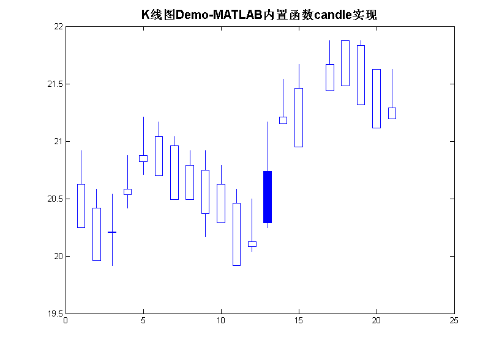
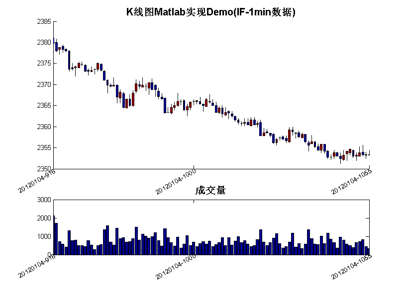
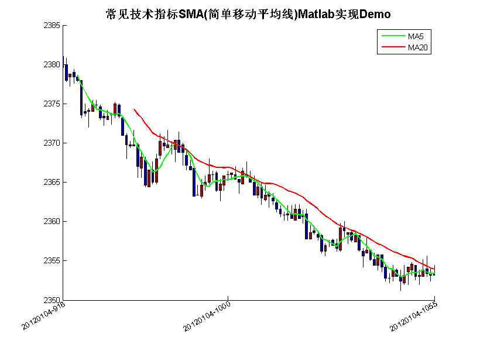
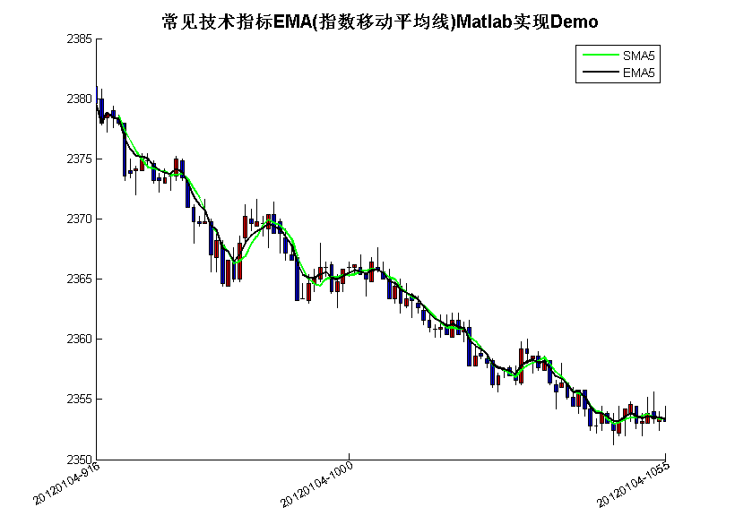
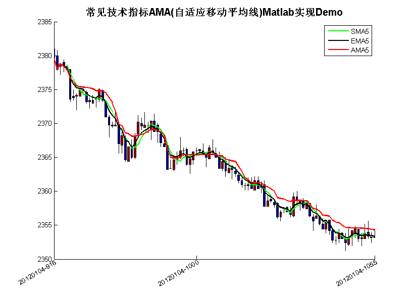
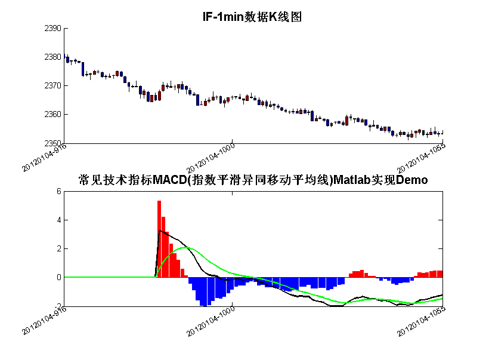
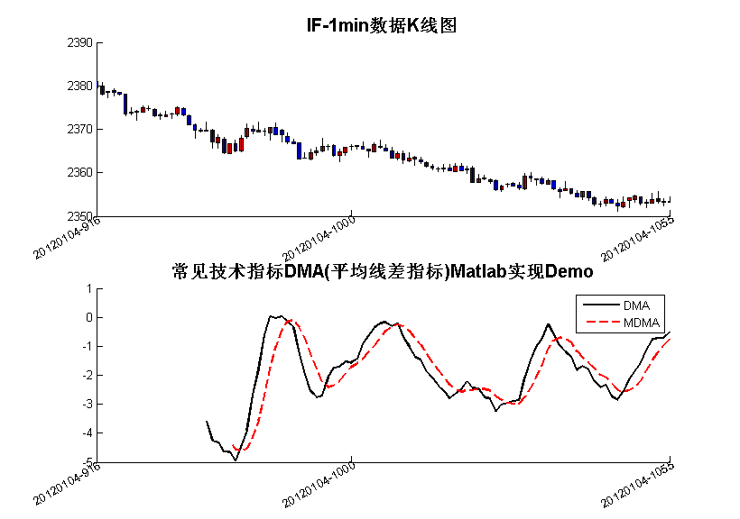
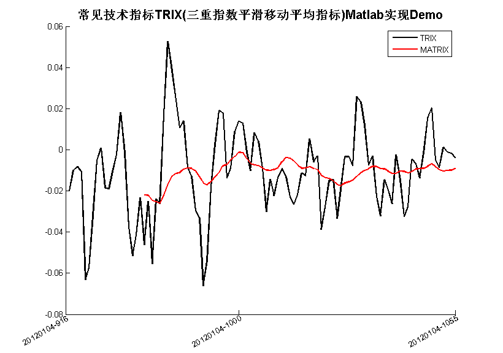

MatlabQuantInvesting4
by LiYang Email:farutoliyang@gmail.com 2014/5/18
Contents
A Little Clean Work
tic; clear; clc; close all; format compact;
Load Data
load IF-20120104.mat;
Data = F(:,6);
IF = F;
MATLAB内置函数candle实现
load disney; scrsz = get(0,'ScreenSize'); figure('Position',[scrsz(3)*1/4 scrsz(4)*1/6 scrsz(3)*4/5 scrsz(4)]*3/4); candle(dis_HIGH(end-20:end), dis_LOW(end-20:end), dis_CLOSE(end-20:end),... dis_OPEN(end-20:end), 'b'); title('K线图Demo-MATLAB内置函数candle实现', 'FontWeight','Bold', 'FontSize', 15);
K线图Matlab实现Demo-Kplot函数
scrsz = get(0,'ScreenSize'); figure('Position',[scrsz(3)*1/4 scrsz(4)*1/6 scrsz(3)*4/5 scrsz(4)]*3/4); load IF-20120104.mat; F = F(1:100, :); subplot(3,1,[1 2]); OHLC = F(:,3:6); Kplot(OHLC,0,'r','b','k'); xlim([1,length( OHLC )]); % % Tick Label Set XTick = []; XTickLabel = []; XTick = [XTick; 1]; str = [num2str(F(1,1)),'-',num2str(F(1,2))]; XTickLabel{numel(XTickLabel)+1, 1} = str; ind = find(F(:,2) == 1000, 1); if ~isempty(ind) XTick = [XTick; ind ]; str = [num2str(F(ind, 1)),'-',num2str(F(ind, 2))]; XTickLabel{numel(XTickLabel)+1, 1} = str; end ind = find(F(:,2) == 1130, 1); if ~isempty(ind) XTick = [XTick; ind ]; str = [num2str(F(ind, 1)),'-',num2str(F(ind, 2))]; XTickLabel{numel(XTickLabel)+1, 1} = str; end ind = find(F(:,2) == 1400, 1); if ~isempty(ind) XTick = [XTick; ind ]; str = [num2str(F(ind, 1)),'-',num2str(F(ind, 2))]; XTickLabel{numel(XTickLabel)+1, 1} = str; end ind = length(F(:,1)); if XTick(end) ~= ind XTick = [XTick; ind ]; str = [num2str(F(ind, 1)),'-',num2str(F(ind, 2))]; XTickLabel{numel(XTickLabel)+1, 1} = str; end set(gca,'XTick', XTick); set(gca,'XTickLabel', XTickLabel); TickLabelRotate(gca, 'x', 30, 'right'); title('K线图Matlab实现Demo(IF-1min数据)', 'FontWeight','Bold', 'FontSize', 15); subplot(313); bar( F(:,7) ); xlim([1,length( OHLC )]); title('成交量', 'FontWeight','Bold', 'FontSize', 15); set(gca,'XTick', XTick); set(gca,'XTickLabel', XTickLabel); TickLabelRotate(gca, 'x', 30, 'right');
常见技术指标Matlab实现
SMA
load IF-20120104.mat; F = F(1:100, :); Data = F(:,6); scrsz = get(0,'ScreenSize'); figure('Position',[scrsz(3)*1/4 scrsz(4)*1/6 scrsz(3)*4/5 scrsz(4)]*3/4); % subplot(221); S = 5; L = 20; [SMA, LMA] = movavg(Data, S, L); SMA(1:S-1) = NaN; LMA(1:L-1) = NaN; OHLC = F(:,3:6); Kplot(OHLC,0,'r','b','k'); xlim([1,length( OHLC )]); set(gca,'XTick', XTick); set(gca,'XTickLabel', XTickLabel); TickLabelRotate(gca, 'x', 30, 'right'); hold on; H1 = plot(SMA,'g','LineWidth',1.5); H2 = plot(LMA,'r','LineWidth',1.5); title('常见技术指标SMA(简单移动平均线)Matlab实现Demo', 'FontWeight','Bold', 'FontSize', 15); M = {'MA5';'MA20'}; legend([H1,H2],M);
SMA EMA
load IF-20120104.mat; F = F(1:100, :); Data = F(:,6); scrsz = get(0,'ScreenSize'); figure('Position',[scrsz(3)*1/4 scrsz(4)*1/6 scrsz(3)*4/5 scrsz(4)]*3/4); % subplot(221); S = 5; L = 20; [SMA, LMA] = movavg(Data, S, L); SMA(1:S-1) = NaN; LMA(1:L-1) = NaN; EMAvalue = EMA(Data, S); OHLC = F(:,3:6); Kplot(OHLC,0,'r','b','k'); xlim([1,length( OHLC )]); set(gca,'XTick', XTick); set(gca,'XTickLabel', XTickLabel); TickLabelRotate(gca, 'x', 30, 'right'); hold on; H1 = plot(SMA,'g','LineWidth',1.5); H2 = plot(EMAvalue,'k','LineWidth',1.5); title('常见技术指标EMA(指数移动平均线)Matlab实现Demo', 'FontWeight','Bold', 'FontSize', 15); M = {'SMA5';'EMA5'}; legend([H1,H2],M);
SMA EMA AMA
load IF-20120104.mat; F = F(1:100, :); Data = F(:,6); scrsz = get(0,'ScreenSize'); figure('Position',[scrsz(3)*1/4 scrsz(4)*1/6 scrsz(3)*4/5 scrsz(4)]*3/4); % subplot(221); S = 5; L = 20; [SMA, LMA] = movavg(Data, S, L); SMA(1:S-1) = NaN; LMA(1:L-1) = NaN; EMAvalue = EMA(Data, S); AMAvalue = AMA(Data, S); OHLC = F(:,3:6); Kplot(OHLC,0,'r','b','k'); xlim([1,length( OHLC )]); set(gca,'XTick', XTick); set(gca,'XTickLabel', XTickLabel); TickLabelRotate(gca, 'x', 30, 'right'); hold on; H1 = plot(SMA,'g','LineWidth',1.5); H2 = plot(EMAvalue,'k','LineWidth',1.5); H3 = plot(AMAvalue,'r','LineWidth',1.5); title('常见技术指标AMA(自适应移动平均线)Matlab实现Demo', 'FontWeight','Bold', 'FontSize', 15); M = {'SMA5';'EMA5'; 'AMA5'}; legend([H1,H2,H3],M);
MACD
% subplot(222); scrsz = get(0,'ScreenSize'); figure('Position',[scrsz(3)*1/4 scrsz(4)*1/6 scrsz(3)*4/5 scrsz(4)]*3/4); load IF-20120104.mat; F = F(1:100, :); Data = F(:,6); subplot(2,1, 1); OHLC = F(:,3:6); Kplot(OHLC,0,'r','b','k'); xlim([1,length( OHLC )]); set(gca,'XTick', XTick); set(gca,'XTickLabel', XTickLabel); TickLabelRotate(gca, 'x', 30, 'right'); title('IF-1min数据K线图', 'FontWeight','Bold', 'FontSize', 15); subplot(2,1,2); S = 12; L = 26; EMA1 = EMA(Data, S); EMA2 = EMA(Data, L); DIFF = EMA1-EMA2; DIFF(1:L-1) = 0; M = 10; DEA = EMA(DIFF, M); MACD = 2*(DIFF-DEA); MACD_p = MACD; MACD_n = MACD; MACD_p(MACD_p<0) = 0; MACD_n(MACD_n>0) = 0; bar(MACD_p,'r','EdgeColor','r'); hold on; bar(MACD_n,'b','EdgeColor','b'); plot(DIFF,'k','LineWidth',1.5); plot(DEA,'g','LineWidth',1.5); xlim([1,length( OHLC )]); set(gca,'XTick', XTick); set(gca,'XTickLabel', XTickLabel); TickLabelRotate(gca, 'x', 30, 'right'); title('常见技术指标MACD(指数平滑异同移动平均线)Matlab实现Demo', 'FontWeight','Bold', 'FontSize', 15);
DMA
% subplot(223); scrsz = get(0,'ScreenSize'); figure('Position',[scrsz(3)*1/4 scrsz(4)*1/6 scrsz(3)*4/5 scrsz(4)]*3/4); load IF-20120104.mat; F = F(1:100, :); Data = F(:,6); subplot(2,1, 1); OHLC = F(:,3:6); Kplot(OHLC,0,'r','b','k'); xlim([1,length( OHLC )]); set(gca,'XTick', XTick); set(gca,'XTickLabel', XTickLabel); TickLabelRotate(gca, 'x', 30, 'right'); title('IF-1min数据K线图', 'FontWeight','Bold', 'FontSize', 15); subplot(2,1,2); S = 5; L = 20; [MA1, MA2] = movavg(Data, S, L); MA1(1:S-1) = NaN; MA2(1:L-1) = NaN; DMA = MA1-MA2; M = 5; MDMA = movavg(DMA, M, M); MDMA(1:M-1) = NaN; hold on; plot(DMA,'k','LineWidth',1.5); plot(MDMA,'r--','LineWidth',1.5); title('常见技术指标DMA(平均线差指标)Matlab实现Demo', 'FontWeight','Bold', 'FontSize', 15); legend('DMA','MDMA'); xlim([1,length( OHLC )]); set(gca,'XTick', XTick); set(gca,'XTickLabel', XTickLabel); TickLabelRotate(gca, 'x', 30, 'right');
TRIX
% subplot(224); scrsz = get(0,'ScreenSize'); figure('Position',[scrsz(3)*1/4 scrsz(4)*1/6 scrsz(3)*4/5 scrsz(4)]*3/4); load IF-20120104.mat; F = F(1:100, :); Data = F(:,6); N = 2; ema = EMA(Data, N); M = 20; TR = EMA( EMA(ema,N) , N); TRIX = ( TR(2:end)-TR(1:end-1) )./TR(1:end-1)*100; TRIX = [NaN; TRIX]; MATRIX = movavg(TRIX, M, M); hold on; plot(TRIX,'k','LineWidth',1.5); plot(MATRIX,'r','LineWidth',1.5); title('常见技术指标TRIX(三重指数平滑移动平均指标)Matlab实现Demo', 'FontWeight','Bold', 'FontSize', 15); legend('TRIX','MATRIX'); xlim([1,length( OHLC )]); set(gca,'XTick', XTick); set(gca,'XTickLabel', XTickLabel); TickLabelRotate(gca, 'x', 30, 'right');
Record Time
toc;
Elapsed time is 11.748996 seconds.